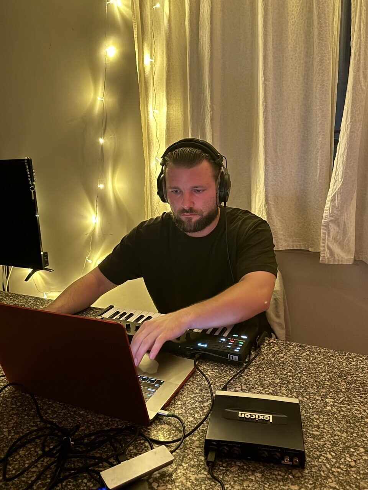
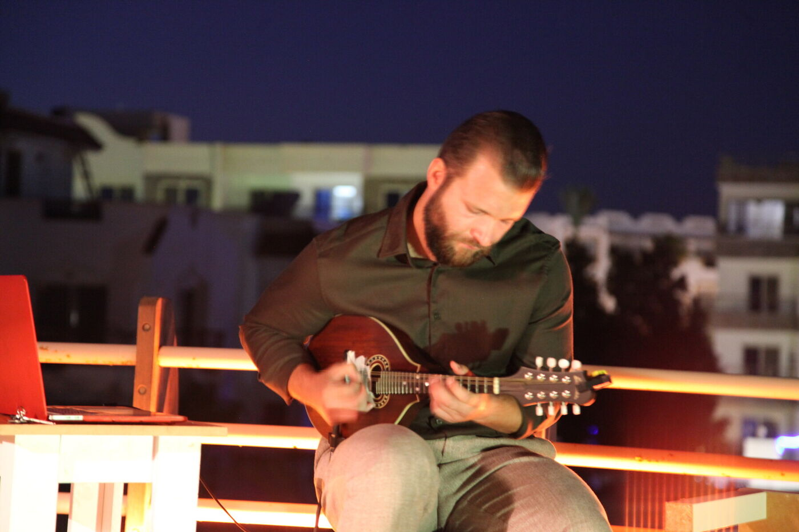
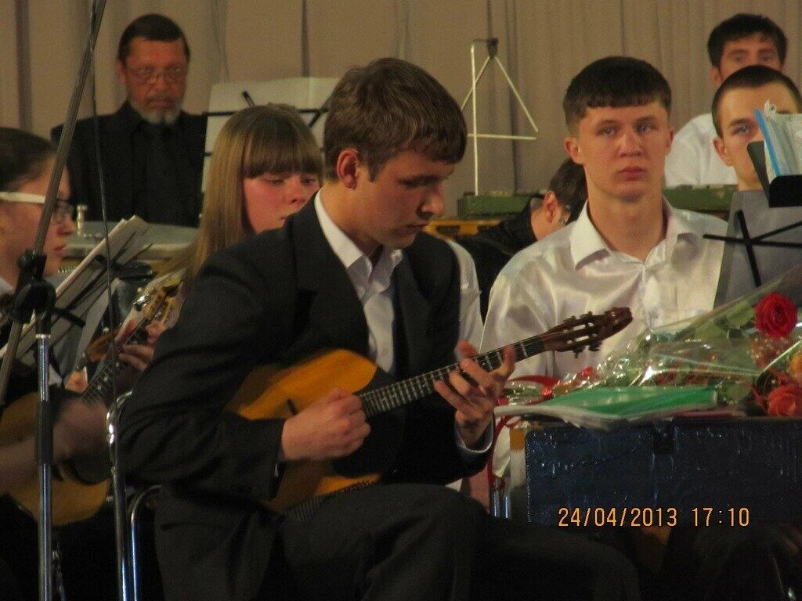
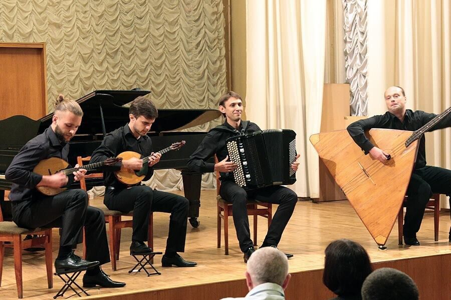

Музыка, которая звучит профессионально
Индивидуальные онлайн-уроки: мандолина, продакшн в Logic Pro, сведение и мастеринг, композиция, оркестровка и гармония. Работаем с вашим материалом с первого занятия.
Бесплатная консультация 20–30 минут: разберём вашу ситуацию и составим личный план.

Эти уроки для вас, если
Вы играете или хотите играть на мандолине
С нуля или переходите с домры, скрипки, гитары. Постановка, техника, репертуар от барокко до современной музыки.
Вы пишете музыку в DAW
Работаете в Logic Pro или другой программе и слышите, что что-то не так, но не понимаете почему.
Вы хотите писать для кино и медиа
Кино, игры, реклама, трейлеры: оркестровка, драматургия и стандарты качества индустрии.
Чему я учу
Каждое направление можно брать отдельно или собрать в личную программу. Нажмите на дорожку, чтобы открыть подробности.

Мандолина — мой голос. Покажу, на что она способна
Больше двадцати лет я играю на мандолине и домре: учился в классе народных инструментов, был солистом оркестров и выпустил альбом, записанный целиком на мандолине. Мандолина звучит в академической музыке, в современных жанрах, в кино и рекламе, и я хочу, чтобы она звучала у вас.
На занятиях:
- Посадка, постановка правой руки и медиатора
- Тремоло, техника и чистая интонация
- Переход с домры, скрипки или гитары
- Репертуар: барокко, классика, концерты Вивальди
- Подготовка к конкурсам и поступлению
- Ансамблевая игра и запись своих партий
От первой идеи до трека, который не стыдно отправить
Logic Pro — мой основной рабочий инструмент: в нём я пишу трейлерную музыку, саундтреки и альбомы. Научу работать в нём быстро и осознанно, а если вы работаете в другой программе, разберём ту же логику в вашей DAW.
На занятиях:
- Интерфейс, шаблоны и быстрые клавиши
- MIDI, виртуальные инструменты и библиотеки
- Аранжировка и структура трека
- Запись живых инструментов и вокала
- Саунд-дизайн и работа с сэмплами
- Свои пресеты и шаблоны под вашу задачу
Почему трек звучит мутно — и это не проблема умений
Большинство проблем в миксе — это не вопрос вкуса, это физика. Громкий звук в одной частотной зоне прячет тихие звуки в той же зоне. Это называется маскировкой, и именно из-за неё треки звучат мутно и плоско.
На занятиях:
- Физика звука за каждым решением
- EQ как инструмент расчистки, а не украшения
- Компрессия: что она делает на самом деле
- Психоакустика: тихий и громкий микс
- Пространство и глубина
- Сведение оркестровой музыки и мастеринг
Почему одни мелодии остаются навсегда, а другие забываются сразу
Многие думают, что мелодия — это вдохновение. На самом деле это система. Мозг запоминает не красоту, а отклонение от ожидания: один неожиданный звук в нужном месте делает тему незабываемой.
На занятиях:
- Как строится мелодический контур
- Где ставить кульминацию и почему
- Как один звук меняет ощущение темы
- Темы для кино и медиа
- Музыкальная память слушателя
- Разбор вашего материала
Почему одни оркестровые треки звучат живо, а другие плоско
Оркестровка — это не подбор инструментов. Это решение о том, кто говорит и кто молчит в каждом такте. Тембр несёт смысл: низкие струнные — неизбежность, гобой — одиночество, медные — сила, которую нельзя остановить.
На занятиях:
- Функции четырёх групп оркестра
- Напряжение без громкости
- Почему оркестр звучит плоско и как это исправить
- Живые инструменты и электроника
- Струнные, медные и деревянные в Logic
- Трейлерная музыка: стандарты индустрии
Почему одни аккорды работают — и как перестать угадывать
Гармония — это не набор правил, а описание того, как слух воспринимает движение. T → S → D → T: дом, уход, напряжение и возврат. Каждый раз, когда фраза заканчивается ощущением «вот теперь точно домой», работает доминанта.
На занятиях:
- Функциональная логика аккордов
- Почему одни прогрессии работают, а другие нет
- Модальный обмен и заимствование
- Отклонения и модуляции
- Как гармония создаёт эмоцию
- Гармонизация ваших мелодий
Теория, которую можно применить сразу, а не через год
Теория музыки — это не скучный предмет для экзаменов, а карта того, что происходит, когда вы работаете со звуком. Двигаете ноту в пианоролле — работаете с одним из четырёх свойств звука. Меняете EQ — меняете тембр через физику обертонов.
На занятиях:
- Теория через пианоролл и DAW
- Интервалы и их физическая природа
- Лад и тональность как система тяготений
- Ритм, метр и темп
- Слух и сольфеджио
- Психоакустика: как мозг слышит звук
Спокойно и по плану к экзамену
Готовлю к поступлению на исполнительские специальности, композицию и звукорежиссуру: от программы на инструменте до слухового анализа фонограмм и творческого проекта.
На занятиях:
- Программа и репертуар для поступления
- Теория, гармония и сольфеджио к экзамену
- Слуховой анализ фонограмм
- Сведение и творческий проект
- Экспресс-подготовка перед экзаменом
- Конкурсы и прослушивания
Как строить профессию, а не просто заниматься музыкой
Многие музыканты умеют писать музыку, но не умеют превратить это в профессию. Разница между «я занимаюсь музыкой» и «у меня есть музыкальная профессия» — не в таланте, а в системе.
На занятиях:
- Позиционирование профессионала
- Ученики и клиенты через контент
- Доход из нескольких источников
- Работа с музыкальными библиотеками и лейблами
- Архив материалов, который работает на вас
- Как не выгорать и держать темп
Первая встреча
Вы пишете мне
Коротко о себе и своей задаче. Отвечаю в тот же день.
Бесплатная консультация
20–30 минут: разбираем, где вы сейчас, слушаем ваш материал или игру и определяем, куда двигаться.
Личный план
Если хотите продолжить, предлагаю формат и программу под вашу цель. Без давления.
Онлайн, индивидуально, по вашему материалу
Занятие длится 60 минут. Работаю с учениками из любой точки мира.
Разовое занятие
- Разбор вашей задачи
- Работа с вашим материалом
- Конкретный план после урока
- Запись занятия
Пакет 4 занятия
- Всё из «Старта»
- Домашние задания и их разбор
- Доступ к базе знаний школы
- Обратная связь между уроками
Пакет 8 занятий
- Всё из «Продвинутого»
- Сопровождение вашего проекта
- Связь в мессенджере
- Приоритет в расписании
- Книга «Теория музыки» в подарок
Полное сопровождение
- До 10 занятий в месяц
- Работа над вашим проектом или программой
- Ежедневная обратная связь
- Все материалы школы
- Книга «Теория музыки» в подарок
Что говорят ученики
Отзывы с площадки, где я преподаю. Рейтинг 5,0.
Михаил — профессионал с большой буквы. Я занимаюсь аранжировкой в Logic Pro, не имея опыта и музыкального образования. Михаил объясняет всё очень спокойно, с огромным интересом, мотивацией и поддержкой. Складывается ощущение, что для него ваш результат так же важен, как и вам самим.
Уроки полностью подстраиваются под вас. Огромное спасибо, для меня он огромный мотиватор на этом нелёгком пути.
Сын поступает в вуз на звукорежиссуру, требовалась предэкзаменационная экспресс-подготовка по слуховому анализу фонограмм, по микшированию звука и консультации по творческому проекту. Очень понравилась работа Михаила, его рекомендации и умение профессионально донести нужный материал до ученика. Спасибо!
Стояла задача научиться работать в Logic Pro, чтобы самостоятельно обрабатывать практики медитации. Всего за две встречи Михаил рассказал про нужные инструменты программы и настроил пресеты, которыми я теперь пользуюсь сама. После каждой встречи присылал записи, к ним удобно возвращаться.
Брали пару консультаций по саунд-дизайну, всем довольны. За пару занятий удалось выстроить понятную картину, с чего начинать и куда двигаться дальше. Всё вовремя, никаких переносов и накладок. Рекомендую!
Михаил отличный профессионал и тонкий музыкант. У меня было сложное задание, и я благодарна за проведённую работу. Теперь я как композитор, похоже, нашла своего аранжировщика.
Очень понравилось разбирать проекты и получать ответы на свои вопросы. Готов продолжать обучение дальше.
Обучаемся, всё отлично! Прошли уже 5–7 занятий и продолжаем. Рекомендую, если нужно поднять навыки сведения. Профессионал своего дела!
Занятия максимально крутые и эффективные!
Шикарный специалист! Однозначно рекомендую!

Михаил Корсун
Композитор, мандолинист и педагог, 26 лет в музыке. Окончил Национальную музыкальную академию им. Чайковского в Киеве, был солистом оркестров, лауреат международных конкурсов.
Пишу музыку для кино, игр и трейлеров: мои альбомы выходят на Amadea Music Productions. В 2026 году выпустил альбом Silent Soul, записанный целиком на мандолине.
В школе нет шаблонных программ. На каждом занятии мы работаем с вашим материалом, вашей задачей и вашим уровнем, конкретно и по существу.


Расскажите о своей задаче
Заполните форму, и я напишу вам в течение нескольких часов. Или напишите напрямую, как вам удобнее.